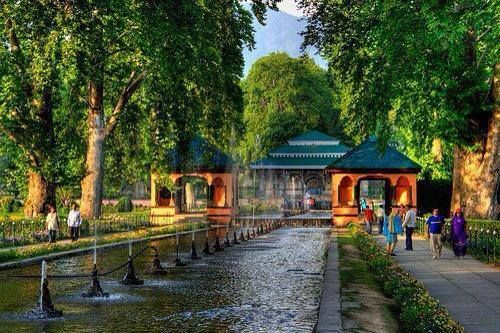

Achabal Gardens

Description
Achabal is a quiet Mughal garden with flowing water channels and shaded walks. It is a place for slow, reflective strolls.
History
Created in the Mughal period, Achabal has been cherished for its water features and serene layout. It remains a gentle example of garden design in Kashmir.